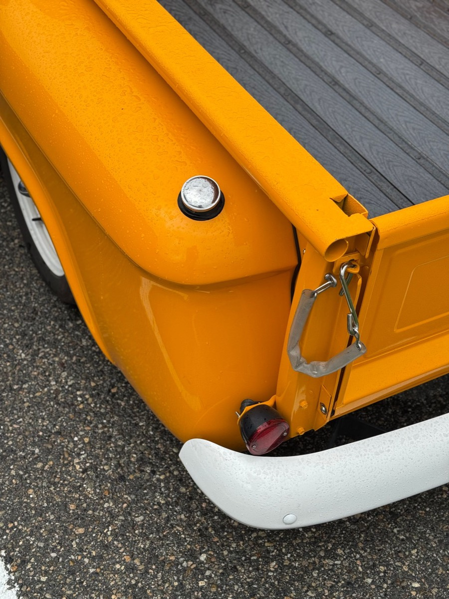

Do Tonneau Covers Improve MPG? Three Tests, Three Answers
The same question has been tested on video at least three times, and the three answers do not agree. A 2022 Ram 1500 gained 1.6 mpg with a cover on. A 2022 Ford Maverick came out 5% better on its trip computer and exactly level at the fuel pump. A 2026 Toyota Tacoma went up, then back down, across t
Cover on, three real highway tests gained 1.6 mpg, 5% the fuel pump could not see, and roughly nothing. The spread is the answer: a cover helps most on a long bed at steady speed, and a short-bed truck may not gain at all.
The most-quoted number comes from a wind tunnel, not a highway. SAE 881874 (1988) found a bed cover cuts vehicle lift by 30% — and the 5–6% it reports is a cut in drag, not in fuel. Lift is the finding almost nobody repeats.

The same question has been tested on video at least three times, and the three answers do not agree. A 2022 Ram 1500 gained 1.6 mpg with a cover on. A 2022 Ford Maverick came out 5% better on its trip computer and exactly level at the fuel pump. A 2026 Toyota Tacoma went up, then back down, across three back-to-back runs.
That spread is the honest answer, and it is more useful than either “covers save gas” or “covers are a myth.” All three tests were run in good faith, and the difference between them tells you what actually decides the outcome on your truck.
What each test actually did
| Test | Truck | Route | Cover on | Cover off | Gain |
|---|---|---|---|---|---|
| TFL, Dec 2022 | 2022 Ram 1500, 3.6L V6 | ~57 mi, 65 then 75 mph | 21.1 mpg | 19.5 mpg | +1.6 |
| Daily Motor | 2022 Maverick, 2.0L EcoBoost | 60 mi, ~70 mph | 34.4 mpg* | 32.6 mpg* | +5% |
| Daily Motor | 2026 Tacoma TRD OR Hybrid | 3 × 50 mi, 71 mph | 22.5, 23.0 | 23.5 | ~0 |
*The Maverick’s two figures are the truck’s own trip computer. At the pump the two runs used 1.862 and 1.863 gallons — the same number twice.
Every one of those runs used the same route in both directions, topped off at the same pump, and held speed with cruise control set against GPS rather than the speedometer. Those are the right controls, and it is why the numbers are worth comparing at all.

The Ram test: the cleanest +1.6 mpg
The Fast Lane Truck ran a 2022 Ram 1500 Tradesman on a highway loop, roughly 57 miles by GPS, at the 65 and 75 mph speed limits, sitting around 2,200 rpm and dropping to 1,900 in eighth gear. The truck is the 3.6-liter Pentastar V6, 305 hp, eight-speed automatic, EPA rated 16 city and 23 highway.
With a soft Mopar tonneau clamped on: 57.0 miles on 2.696 gallons, 21.1 mpg. With the cover off: 57 miles on 2.918 gallons, 19.5 mpg. That is the 1.6 mpg gain.
Two details make this the most trustworthy of the three. When they took the cover off they left it in the bed, so the 25–30 lb cover was present in both runs and the comparison isolates the shape rather than the weight. And they calculated from the pump every time instead of trusting the dash — with good reason, because the truck’s own trip meter claimed 21.9 mpg on the no-cover run against a pump figure of 19.5. That is the same trip-meter miss that turned up in the Maverick test below.

The Maverick test: the pump said no change
Daily Motor ran a 60-mile loop on a 2022 Maverick XLT with the 2.0-liter EcoBoost, FX4 and 4K tow packages, about 10,000 miles on it, and a Truxedo Sentry CT hard roll-up. Cruise set at a GPS 72, tire pressures at the door placard of 35 psi cold, climate at 73 on auto, 48°F ambient.
With the cover rolled open: 60.8 miles on 1.862 gallons, 32.6 mpg. With it closed and latched: 60.8 miles on 1.863 gallons, 32.6 mpg. One thousandth of a gallon apart.
The truck’s trip computer disagreed, reading 32.6 for the open run and 34.4 for the closed one — a 1.8 mpg gap, which works out to 5.5%, which the host rounded down to 5%. He went with the computer, said plainly that he was skeptical of two fills landing that close, and flagged that the pump had more margin for error in it than he would like.
Both readings are in the video, and the 5% figure is the one that circulates. It is derived from the dash display, not from the fuel that went into the tank. That does not make it wrong. It makes it a five percent difference the pump could not see.
The Tacoma test: the answer flipped twice
The same channel then ran a 2026 Tacoma TRD Off-Road with the i-Force Max hybrid, using a BAK Revolver X4S, and did something smarter than a single A-to-B: three consecutive 50-mile legs, closed, open, closed again, to catch exactly the kind of drift that spoils a two-run test.
The result was 22.5 mpg closed, 23.5 open, 23.0 closed. The middle run beat both runs where the cover was down.
The host was upfront about why he did not trust that ordering. The third leg hit construction, dropped to a 65.1 mph average against 67.1, and caught two short downpours. He also noted that the owner had removed the front air dam, and that the short bed and short cab may leave less wake for a cover to tidy up than a long bed does. His conclusion was that a tonneau made no appreciable difference on this truck, and that he would not spend on one purely hoping for fuel economy.
What the wind tunnel says, and what it does not
There is a real primary source here, and it is older and narrower than the blog posts suggest. SAE paper 881874, “Pickup Truck Drag Reduction — Devices That Reduce Drag Without Limiting Truck Utility,” by Maxwell, Jones and Jones at Texas Tech University, was published for the SAE International Truck and Bus Meeting and Exposition on 7 November 1988.
Two devices were tested: a wing structure behind the top rear of the cab, and a cover over the rear portion of the bed. Per the abstract, both demonstrated 5% to 6% drag reductions, and the bed cover alone reduced vehicle lift by 30%. Together, in scale-model testing, they produced drag reduction on the order of 17% with the same 30% lift reduction.
Read that carefully, because it is where a lot of the internet goes wrong. The paper reports drag reductions. Drag is one loss among several — rolling resistance, drivetrain losses and accessories do not shrink when the wake behind the cab does. A 5–6% drag cut does not hand you a 5–6% fuel saving.
The 30% lift reduction is the finding nobody quotes. Lift is the rear of the truck getting light at speed, and less of it is a stability and towing argument that has nothing to do with the pump.
Why the three answers disagree
The tests were not sloppy, so the disagreement is in the trucks.
Bed length. A long bed with a big tailgate produces a large recirculating wake. Closing it off changes more than closing off a short bed does. The Ram’s 6-foot-4 bed and the F-150’s 8-foot bed have more wake to work with than the Maverick’s and the Tacoma’s short boxes.
What the cover does when it is open. A hard roll-up stacks into a roughly 8-inch bundle at the bulkhead even when open. A soft roll-up lies flatter. Neither is the same shape as no cover at all, so “cover open” and “truck with no cover” are not identical configurations — a point none of the three tests gets to fully isolate.
Measurement resolution. This is the big one. A 1.5 mpg difference on a 60-mile run is a fraction of a gallon, and pump shutoff is not a precision instrument. The Maverick test is the clearest illustration: the pump returned identical fuel numbers and the dash returned a 1.8 mpg gap. When the two instruments disagree by that much, the true difference is probably smaller than the number that gets quoted.
The topper comparison, for scale
A related test on the same channel gives a sense of how small these margins get. A 2004 F-150 with the 4.6-liter V8 — 8-foot bed, about 4,900 feet of elevation, a 53.96-mile loop at a 70 mph cruise — ran 18.16 mpg bare and 18.26 mpg with a roughly 200 lb camper shell fitted. One tenth of a mile per gallon. The shell probably smoothed the airflow and probably cost the benefit back in weight, and the two effects very nearly cancelled. Any tonneau claim in the low single digits should be read against that.
What a cover is worth for reasons you can count
Fuel is the weakest argument for a tonneau, and the one advertised hardest. The three reasons that hold up regardless of what the pump says are weather, security and resale. A bed that stays dry stays rust-free. A hard cover is a rigid barrier over the load, and a soft one at least keeps things out of sight. And a cover transfers to the next owner with the truck.
If you want a tonneau for those reasons, the fuel question stops mattering, and the purchase should be decided on how you use the bed instead.
Which cover, at what price
Prices and review counts below were read from the live AmericanTrucks listings for the 2019–2026 Silverado 1500 on 16 November 2026.
Soft roll-up, $189.99–$274.99. The Proven Ground Locking Roll-Up at $189.99 with 136 reviews is the volume seller in this tier, and the Barricade Soft Roll Up is $274.99 with 71 reviews. Vinyl over a frame keeps rain out and rolls flat at the bulkhead, which is the least intrusive open position of any type.
Proven Ground Locking Roll-Up → $189.99 · 136 reviews · checked 16 Nov 2026
Hard tri-fold, around $509.99. The Proven Ground Low Profile Hard Tri-Fold is $509.99 from $629.99 with 317 reviews, the most-reviewed cover in the category. This is the tier where the cover becomes a security barrier rather than a weather barrier.
Proven Ground Hard Tri-Fold → $509.99 · 317 reviews · checked 16 Nov 2026
Hard roll-up, from $1,299.99. The BAKFlip MX4 starts at $1,299.99 with 220 reviews; the BAK Revolver X4S — the type used in the Tacoma test above — starts at $1,499.99 with 57 reviews. Both are aluminium, both lock, and neither is worth buying for the fuel.
BAKFlip MX4 → Starting at $1,299.99 · 220 reviews · checked 16 Nov 2026
The category itself carried 552 covers at the last check, broken down by type and by which bed options they fit — see the tonneau cover buyer’s guide.
Frequently asked questions
Do tonneau covers improve gas mileage?
Sometimes, by a small and hard-to-measure margin. Real highway tests returned +1.6 mpg, a disputed 5%, and essentially nothing on three different trucks. The only primary aerodynamic source reports 5–6% drag reduction from a bed cover, which is not the same quantity as a 5–6% fuel saving.
How much can I realistically expect?
Budget a low-single-digit percentage at highway speed, if anything. The 200 lb camper shell test is the reality check: 18.16 mpg bare against 18.26 mpg with a shell.
Is a hard cover better than a soft one for economy?
No. Fuel does not care whether the panel over the bed is vinyl or aluminium. The choice between them is about security, and about how much room the open cover takes up at the bulkhead.
What this means on your own truck
If fuel is the reason, expect a gain your own before-and-after will struggle to detect, and use the pump rather than the dash to try: same station both ways, GPS distance, same route in both directions.
If weather, security or resale are the reason, the fuel number is a tiebreaker at most.
CarModReview may earn a commission from purchases made through links on this page, at no extra cost to you.
Sources
Fuel economy figures, routes, speeds, weather, tire pressures and methodology read from the transcripts of four videos on 16 November 2026:
- The Fast Lane Truck, “My Jaw Dropped When I Saw How Much My Truck’s MPG Improved WITH a Bed Tonneau Cover vs WITHOUT!”, published 20 December 2022, youtube.com/watch?v=gNjyqtIjSa0 — 624,765 views at time of reading. 2022 Ram 1500 Tradesman, 3.6L Pentastar V6, 305 hp, EPA 16/23/19; 57.0 mi on 2.696 gal = 21.1 mpg cover on, 57 mi on 2.918 gal = 19.5 mpg cover off.
- The Fast Lane Truck, “Surprising Result: Here’s What Happens To Your Truck’s MPG When You Install A Topper!”, youtube.com/watch?v=hfsc2Uq47Rk — 975,103 views. 2004 Ford F-150, 4.6L V8, 8-foot bed, ~4,900 ft elevation, 53.96 mi GPS: 18.16 mpg without topper, 18.26 mpg with a ~200 lb topper.
- Daily Motor, “Ford Maverick – Tonneau Cover Effect on MPG”, youtube.com/watch?v=iolRP4CQ-uc — 126K views. 2022 Maverick XLT 2.0L EcoBoost, FX4 and 4K tow, Truxedo Sentry CT, 60.8 mi at GPS 72, 35 psi cold, 48°F. Pump: 1.862 gal open, 1.863 gal closed, both 32.6 mpg. Trip computer: 32.6 open, 34.4 closed.
- Daily Motor, “Toyota Tacoma Hybrid – Tonneau Effect on MPG | 70-MPH Highway Fuel Economy Test”, youtube.com/watch?v=W5LSECywp4o — 10,728 views. 2026 Tacoma TRD Off-Road Hybrid, BAK Revolver X4S, three 50 mi legs at 71 mph, 30 psi cold: 22.5 closed, 23.5 open, 23.0 closed.
Aerodynamic data from Maxwell, T. T., Jones, J. C. and Jones, W. B., “Pickup Truck Drag Reduction-Devices That Reduce Drag Without Limiting Truck Utility,” SAE Technical Paper 881874, SAE International Truck and Bus Meeting and Exposition, Indianapolis, 7 November 1988, abstract read on SAE Mobilus on 16 November 2026, doi.org/10.4271/881874. The paper reports 5–6% drag reduction from each device individually, 30% lift reduction from the bed cover, and ~17% drag reduction from wing and cover together in scale-model testing.
Prices, review counts and fitment read from the live AmericanTrucks 2019–2026 Silverado 1500 tonneau listing on 16 November 2026.
Topics
- Tonneau & Bed
- Proven Ground
- Barricade
- Silverado 1500
- F-150